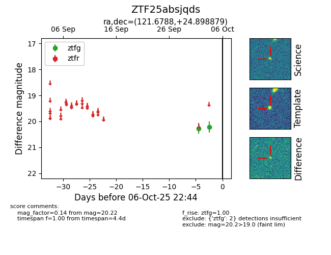

FINK: ZTF25absjqds
Lasair: ZTF25absjqds
ALeRCE: ZTF25absjqds
ZTF25absjqds (ztf,fink)
equatorial (ra, dec) = (121.6788,+24.89888)
galactic (l, b) = (197.2351,+26.89708)

last ztfg=20.22
2 ztfg detections